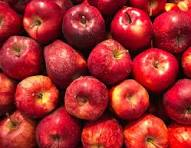

WHAT IS APPLE?
An apple is a round, edible fruit produced
by an apple tree (Malus spp., among them the domestic or orchard
apple; Malus domestica). Apple trees are cultivated worldwide and are
the most widely grown species in the genus Malus.
The tree originated in Central Asia, where its wild ancestor,
Malus sieversii, is still found. Apples have been grown for
thousands of years in Asia and Europe and were introduced to
North America by European colonists. Apples have religious and
mythological significance in many cultures, including Norse,
Greek, and European Christian tradition.